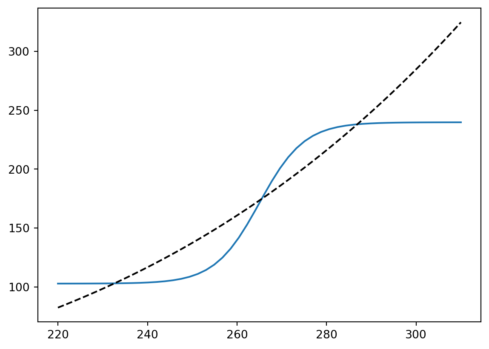

This material has not yet been finalised and is still under construction. Once it is covered in lectures, this banner will be replaced.
Reference
This chapter follows some developments in Chap. 1 of (Kaper and Engler 2013) though we shall go into much greater detail on some numerical and analytical tools.
Recall that we previously introduced the basic energy balance model in Chapter 3. There, we derived the basic heat equation model for the Earth’s temperature given by the following ordinary differential equation (ODE) for \(T = T(t)\), \[
c \frac{\mathrm{d}T}{\mathrm{d}t} = \frac{1}{4} Q(1 - a) - \sigma \gamma T^4,
\tag{8.1}\] where we have defined \(c = \rho c_p d\) as the heat capacity of the atmosphere.
In this chapter, we discuss some of the numerical and analytical tools at our disposal for studying the above equation.
8.1 Steady-state analysis
Previously, we have assumed that the planetary albedo, \(a\), is constant and independent of temperature. In actuality, water can turn to snow and ice and vice versa, and since snow and ice have much higher albedo than open water, then we should consider \(a = a(T)\).
We know that there are two relevant ranges to consider: \[
a(T) \approx
\begin{cases}
0.7 & \mathrm{if }\, T < 150\mathrm{K}, \\
0.3 & \mathrm{if }T > 280\mathrm{K}.
\end{cases}
\] Basically, the above guarantees that more energy is reflected if temperatures are low. To model this, we can use a ramp function, \[
a(T) = A - B \mathrm{tanh}\left(k(T - 265)\right).
\tag{8.2}\] where \(A = 0.5\), \(B = 0.3\), \(k = 0.1\), and \(T_0 = 265\).
Using parameters from (Kaper and Engler 2013) p.16 and p.17, we can study the steady-state solution, which is given by seeking the zeros of \[
\frac{1}{4}Q[1 - a(T)] = \sigma \gamma T^4.
\] Note that (Kaper and Engler 2013) use \(Q = 342\) but they do not have the initial pre-factor of \(1/4\). So we shall use \(Q = 1370\) (noting \(1370/4 = 342.5\)).
import numpy as npimport matplotlib.pyplot as pltimport scipy.optimize as scioptQ =1370sigma =5.67e-8gamma =0.62TT = np.linspace(220,310,50)def fun(T): a =0.5-0.2*np.tanh((T -265)/10) x = (1-a)*Q/4return xLHS = fun(TT)plt.plot(TT, LHS)plt.plot(TT, gamma*sigma*TT**4, 'k--')def eq(T): x = fun(T) - gamma*sigma*T**4return xT1 = sciopt.fsolve(eq, 230)T2 = sciopt.fsolve(eq, 265)T3 = sciopt.fsolve(eq, 290)print("T1 = {:.2f}".format(T1[0]))print("T2 = {:.2f}".format(T2[0]))print("T3 = {:.2f}".format(T3[0]))
T1 = 232.63
T2 = 265.50
T3 = 286.86

Therefore multiple equilibria are observed. You can argue (how?) that the centre equilbria is unstable while the other two are stable. The higher temperature corresponds to the one that the Earth is currently in, but according to this model, there seems to be the possibility of a colder climate (50 degrees colder) where the Earth is entirely covered with snow and ice.
8.2 Newton solver for the steady states
In the above code, we used the built-in Python codes (fsolve) to solve for the steady-states. It is a good idea to learn (or review, if you have learned it previously) how to design your own solver. An implementation of Newton’s solver is given by the following pseudo-code:
Pseudocode for Newton’s method
1. input x0, tolerance, maxiterations, f, df
2. repeat while |f(x0)| > tol and iterations < maxiterations
a. set y0 = f(x0)
set yp = df(x0)
b. set x1 = x0 - y0/yp
c. print iter #, x1, and f(x1)
d. set x0 = x1